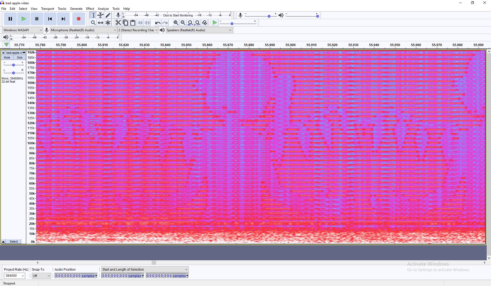
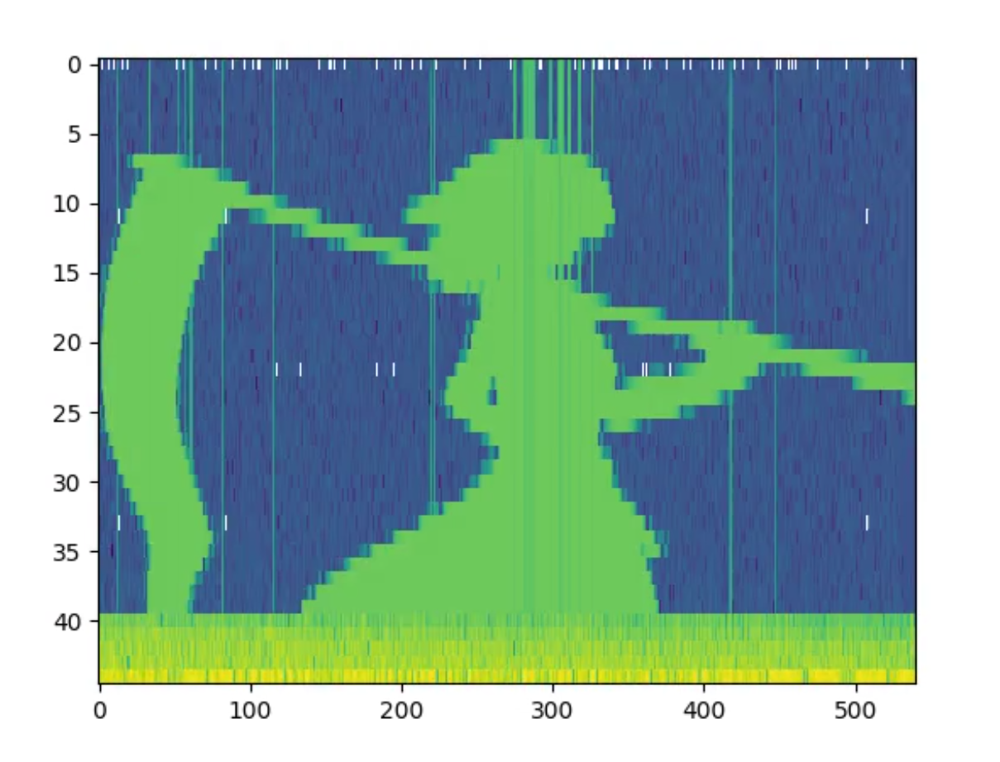

(Bad Apple!! = the black and white Touhou meme video)
Most audio files allow a few different values for the sample rate of the file. Typically, people can hear frequencies between 20Hz and 20kHz, and to store a waveform of such bandwidth, according to the Nyquist theorem, the sample rate must be at least 40 000 samples per second. 44100 is a reasonable standard value. However, most audio files such as WAV or FLAC support up to 384 000 samples per second, meaning a bandwidth of 192kHz. This is completely overkill for anything audio related, but it does provide some room to store some other stuff in the file.
So essentially, many audio formats allow a bandwidth of 192kHz, where only around 40kHz of that are audible. Basically, coming back to the original goal of the project, we can upsample the Bad Apple!! audio track to 384 ksamples/s, then band limit it to around 20kHz, and then store the video in the rest.
My approach to do this was firstly, using a youtube downloader and FFMPEG, I converted the video into a series of frames. This can be done using this command:
ffmpeg -i input_video.mp4 -vf fps=target_fps,scale=target_width:target_height output_frames/frame_%04d.png
I then wrote a python script to convert the video and audio track into the audio file containing both.
To do this, I first split the audio file into sections that would each contain one column, or "slice" of one frame. I then convert this section into frequency domain using FFT, and write the corresponding column of the corresponding frame into the higher frequency part of the FFT output, leaving the lower part untouched, since that contains the audio track. In my script, I did this by literally just adding a value of 32000 to the real part of the complex array output of the FFT. Since spectrograms show the magnitude of the frequency rather than just the real or imaginary parts separately, this method will suffice. The frames are simply done one after the other, with the right side of one frame being next to the left side of the next frame. After FFT'ing the section and adding the corresponding column of image, the section is run through an inverse FFT to convert it back to the time domain. After all of the columns of all the frames are done, the sections are reassembled into one array, and written to a WAV file.
Here is the script I wrote to do this. (Note that I do not claim that this is a particularly well written script, just that it worked at least once for me)
import numpy as np from scipy.io.wavfile import read, write import matplotlib.pyplot as plt from PIL import Image import os FRAME_SIZE_SECONDS = .125 SAMPLE_RATE = 384000 HORIZONTAL_RESOLUTION = 540 # only horizontal resolution is accurate, the vertical one might be different. VERTICAL_RESOLUTION = 360 AUDIO_BANDWIDTH = 22000 AUDIO_INPUT = "(Your input path)" AUDIO_OUTPUT = "(Output path)" FRAMES_PATH = "(Path to the video frames. Make sure the naming format is the same as the ones FFMPEG was told to generate)" # FFMPEG command: # ffmpeg -i input_video.mp4 -vf fps=target_fps,scale=target_width:target_height output_frames/frame_%04d.png file = read(AUDIO_INPUT) input = np.array(file[1]) samples_per_column = int(SAMPLE_RATE * FRAME_SIZE_SECONDS / HORIZONTAL_RESOLUTION) # samples per column must be an even number if samples_per_column % 2 != 0: samples_per_column += 1 # input must be an integer multiple of samples_per_column * HORIZONTAL_RESOLUTION n_frames = int(len(input) / (samples_per_column * HORIZONTAL_RESOLUTION)) + 1 # input must be padded to n_frames * samples_per_column # don't use np.pad, that tries to allocate 11 terabytes of ram unpadded = input input = np.zeros(n_frames * HORIZONTAL_RESOLUTION * samples_per_column, dtype=np.int32) input[:len(unpadded)] = unpadded input_columns = input.reshape(-1, samples_per_column) # takes an array of length n and maps the values into a new array of a different length. (written by chatgpt) def stretch_array(arr, new_length): old_length = len(arr) indices = np.linspace(0, old_length - 1, new_length) stretched_array = np.interp(indices, np.arange(old_length), arr) return stretched_array def process(): column_number = 0 for frame in range(n_frames - 1): # open the image if it exists imgpath = FRAMES_PATH + "frame_" + str(frame + 1).zfill(4) + ".png" if not os.path.exists(imgpath): break img = np.array(Image.open(imgpath)) img = np.dot(img[..., :3], [0.2989, 0.5870, 0.1140]) img = np.clip(img, a_min=0, a_max=255) for col in range(HORIZONTAL_RESOLUTION): section = np.fft.rfft(input_columns[column_number, :]) # find out which indices are audio and which are graphics # multiply by two since bandwidth is half of sample rate graphics_index_start = int(len(section) * AUDIO_BANDWIDTH * 2 / SAMPLE_RATE) # write the graphics to the section section[graphics_index_start:] = stretch_array(np.flip(img[:, column_number % HORIZONTAL_RESOLUTION] * 128), len(section[graphics_index_start:])) # put the fft'd numbers back to time domain section = np.fft.irfft(section) # print(len(section)) input_columns[column_number, :] = section column_number += 1 print("completed " + str(100 * frame / n_frames) + "%") process() output = input_columns.flatten() # make sure to clip the results rather than have them over/underflow output = np.clip(output, a_min=-32767, a_max=32767) output = output.astype(np.int16) plt.plot(output) write(AUDIO_OUTPUT, SAMPLE_RATE, output) print("Done") print("Number of samples per column: " + str(samples_per_column)) print("Number of columns per frame: " + str(HORIZONTAL_RESOLUTION))
The output can kind of be viewed in Audacity's spectrogram, but this method is kind of janky and does not allow for proper video playback.
I eventually chose to write another script to play the file. This basically just takes the file, splits it into sections the same size as in the other program, and plots the absolute of the FFT'd sections in matplotlib.
from scipy.io.wavfile import read, write import matplotlib.pyplot as plt from matplotlib.animation import FuncAnimation import numpy as np AUDIO_INPUT = "(Path to the audio file)" VIDEO_OUTPUT = "(Output path)" SAMPLE_RATE = 384000 # samples per column must be an even number SAMPLES_PER_COLUMN = 88 COLUMNS_PER_FRAME = 540 FRAMES_PER_SECOND = 8 ASPECT_RATIO = 4 / 3 file = read(AUDIO_INPUT) input = np.array(file[1]) n_samples = SAMPLES_PER_COLUMN * COLUMNS_PER_FRAME n_frames = len(input) // n_samples def PlotFrame(input, frame): start = n_samples * frame section = input[start:start + n_samples] output = np.zeros((COLUMNS_PER_FRAME, SAMPLES_PER_COLUMN // 2 + 1)) for i in range(COLUMNS_PER_FRAME): column = section[i * SAMPLES_PER_COLUMN: (i + 1) * SAMPLES_PER_COLUMN] column = np.abs(np.fft.rfft(column)) output[i, :] = np.log2(column) return output fig, ax = plt.subplots() def update(frame): ax.clear() ax.imshow(np.rot90(PlotFrame(input, frame)), cmap='viridis', interpolation='nearest', aspect=(2 * COLUMNS_PER_FRAME / (SAMPLES_PER_COLUMN * ASPECT_RATIO))) animation = FuncAnimation(fig, update, frames=n_frames, interval=1000 / FRAMES_PER_SECOND, repeat=False) animation.save(VIDEO_OUTPUT, writer='ffmpeg', fps=FRAMES_PER_SECOND) plt.show()
